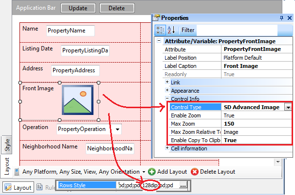
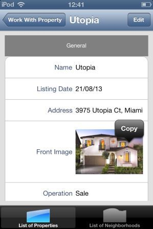

Images are very common in applications and the users of these apps are used to being able to manipulate them. For example, zoom in/out, scroll inside the image, copy the image, etc. GeneXus have a control that enables this behavior in pour images in a Smart Device application. Using the controlOn the Work With for Smart Devices object (WWSD) or Panel object (SDPanel), select the node which has the image attribute or variable. For example, the Section(General) node inside the Detail node of the WorkWithDevicesProperty (the WWSD applied to the Property transaction, a transaction created to handle the houses and appartments in sale or rent by a real estate), we change the width of the row corresponding to the front image of the property, and then change the Control Type of that attribute:  Properties
 |
| Backlinks | |
| Category:Control Types | Enable Zoom property |
| Max Zoom Relative To property | MaxZoom property |
| Toc:Native Mobile Applications Development | |